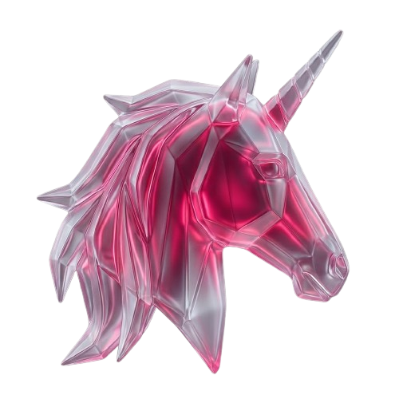

01
UX/UI Design de produtos digitais
Pesquisa, arquitetura de informação, fluxos e interface para produtos digitais que resolvem problemas reais de usuário e de negócio.
Sou Lucas Cabral, Product Designer e Design Engineer. Desenho experiências digitais e conduzo a implementação com IA, unindo UX, UI, operação e produto funcionando de verdade.
Minha abordagem reduz a distância entre conceito, interface e produto em produção, conectando critérios de design, viabilidade técnica e impacto real na operação.
Meus projetos mostram não só telas finais — mostram raciocínio, critérios, decisões, validações e o caminho para transformar problemas em soluções utilizáveis.
Do desenho da experiência à implementação funcional, atuo nas frentes que conectam produto, operação e tecnologia.
Pesquisa, arquitetura de informação, fluxos e interface para produtos digitais que resolvem problemas reais de usuário e de negócio.
Conduzo a implementação de telas e fluxos com apoio de IA, mantendo critério de produto, guardrails e revisão humana em cada entrega.
Agentes de triagem e atendimento conectados a canais reais, desenhados para coletar contexto e encaminhar com clareza.
Interfaces para operações internas: estados, permissões, fluxo de trabalho e dados organizados para o uso diário de quem opera.
Sites que traduzem posicionamento e oferta em páginas claras, rápidas e prontas para gerar contato.
Leitura da operação real, identificação de gargalos e decisões de produto para times que precisam evoluir processo e interface juntos.
Cada projeto documenta raciocínio, decisões e entrega. Veja os casos completos nas páginas externas.

CASE COMPLETO UX/UI · Product Strategy · EdTech · Protótipo funcionalProduto educacional gamificado que conecta pesquisa, estratégia, design system e protótipo navegável para transformar constância de estudo em progresso real.
Pesquisa, jornada do usuário, estratégia de produto, UI, design system, prototipação e documentação de decisão.
Interface interna criada para organizar atendimentos, estados, prioridades, histórico e fluxo de trabalho de uma operação real de varejo.
Design de sistemas internos, arquitetura de fluxo, estados, regras operacionais e melhoria de rotina real.
Ver resumo do projeto →Agente de triagem conectado ao WhatsApp, desenhado para coletar contexto, organizar demandas e encaminhar atendimentos com mais clareza.
Design conversacional, prompt engineering, critérios de handoff e integração com operação real.
Ver projeto →Camada pública da Papelaria Sartec, pensada para transformar presença digital em entrada de atendimento e pedidos.
Arquitetura de informação, copy comercial, presença digital local e conexão com operação.
Ver site →Página comercial para apresentar soluções digitais baseadas em atendimento, automação, sites e métricas para pequenos e médios negócios.

Posicionamento, arquitetura de oferta, estrutura comercial e landing page.
Ver página →Meu jeito de trabalhar, sem virar uma aula extensa.
Mergulho no contexto real antes de qualquer interface.
Personas, jornada, pipeline e o trabalho real de quem opera.
Arquitetura, hierarquia, estados, microcopy e responsividade.
Testo no uso real, transformo achados em decisões e documento para evolução.
Cresci dentro da papelaria da minha família, a Sartec. Desde cedo, acompanhei a rotina de atendimento, pedidos, clientes, loja, telemarketing, processos comerciais e tudo aquilo que faz uma operação funcionar no dia a dia. Mesmo durante a faculdade, continuei ajudando de forma remota sempre que podia, principalmente em demandas de comunicação, mídia, atendimento e organização.
Na UFSC, me formei em Biologia e encontrei no mergulho uma das partes mais marcantes da minha trajetória. Estudei peixes recifais, ecossistemas costeiros e vivi de perto o trabalho de campo, mas também entendi que não queria seguir uma carreira tradicional na área.
Depois da graduação, comecei a procurar uma área em que eu realmente me visse construindo futuro. Foi quando encontrei UX Design e o programa UX Unicórnio, do Leandro Rezende. Ali minha cabeça abriu para design, produto, pesquisa, interface, experiência do usuário e construção de soluções digitais.
A partir disso, comecei a estudar intensamente, consumir conteúdo, testar ferramentas e aplicar esse repertório em projetos reais. Hoje, meu trabalho junta vivência de operação, UX/UI Design, Product Design, IA e implementação assistida para transformar problemas reais em produtos digitais claros, funcionais e bem documentados.

Do design no Figma à implementação assistida por IA, uso essas plataformas para organizar decisões, prototipar, documentar e acelerar entregas.
Estou aberto a oportunidades como Product Designer, UX/UI Designer, Design Engineer ou funções próximas em times que valorizem raciocínio de produto, processo e entrega funcional.